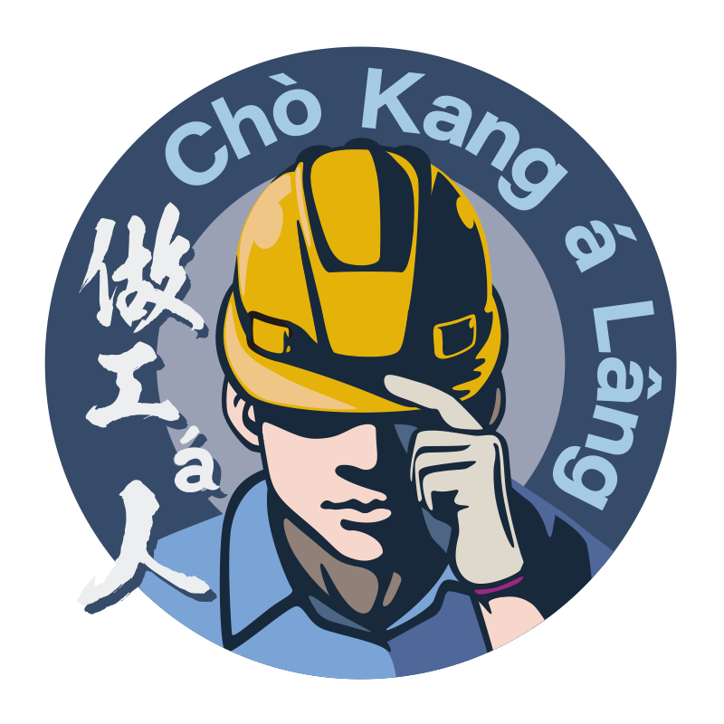

做工á人台語工作室用廣播劇、有聲故事、台語詞典，語詞解說，在來ê地號名解說，守護這ê島嶼ê共同語言。
用聲音kah文字kā咱ê母語留--落--來，hō͘後代ê人知影。
做工仔人台語工作室是一陣對台灣話有真深ê感情ê人做夥經營拍拚--ê，tī 2023年成立。面對台語tī現代社會漸漸欲無--去ê危機，我們選擇用行動來回應——用廣播劇、有聲故事kah語詞教學ê節目，把台語ê súi留--落-來。
目前一直有teh製作 Podcast 與 YouTube 節目，阮是攏先kā欲做ê影片內容寫做文字稿，雙人校對無問題了後，才開始錄音，當然錄音錄了嘛愛聽看語音，表情有重耽無，聽候攏完成，才有開始配樂做影片。字幕閣做甲2排，白話字甲漢羅濫，hō͘閣卡chē人通ná聽ná學，bē受tio̍h hō͘時間kah地點來限制。語詞紹介專欄是用短短ê文字用心解說阮揀ê台語詞愛按怎使用，有啥物變化。舊地號名ê專欄，盡量揣目前閣網路閣揣有ê資料，紹介咱過去是按怎kā 1 ê所在號名--ê，知過去，卽通創造未來。
閣了解卡chē關於工作室 →「咱ê話，是這粒島嶼本底ê共同語。Tī chit-má台語去hō͘人看輕ê時代，咱ài出來做寡代誌，kā咱ê記智保留--落-來。」— 做工仔人台語工作室
從廣播劇、童話故事到台語詞典，九大系列陪你學台語。
訂閱Podcast，隨時學台語。